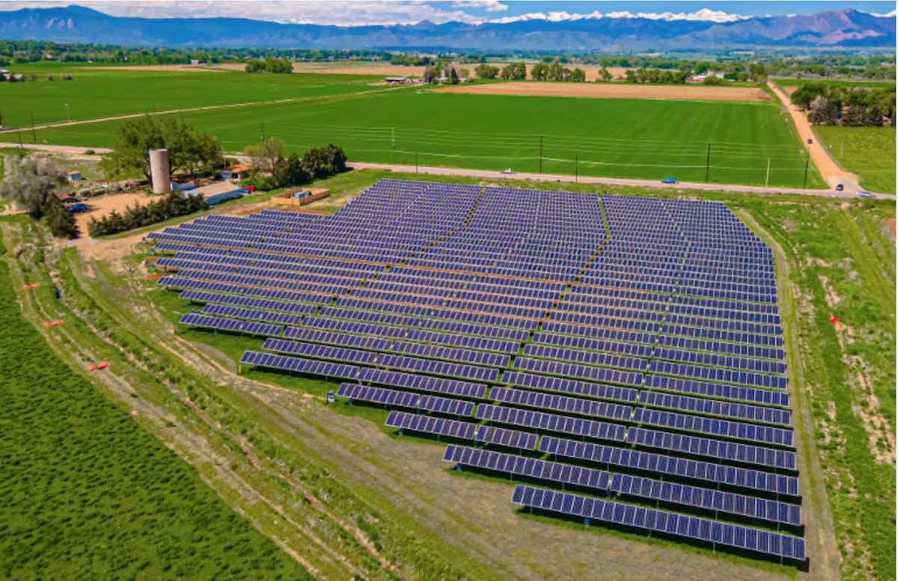
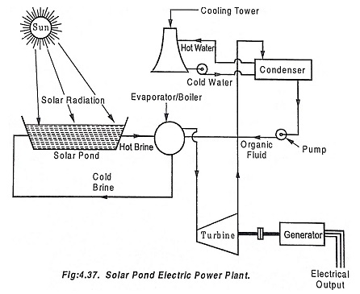

Про об'єкт
Сонячна ферма «Сонячна Долина» — це об'єкт відновлюваної енергетики, що знаходиться в Миколаївській області. Вона була побудована для того, щоб перетворювати енергію сонця в електрику і зменшити викиди шкідливих речовин в атмосферу.
Потужність цієї електростанції становить 35 МВт. Енергія генерується на напрузі 0,4 кВ, після чого за допомогою трансформаторів підвищується до 35 кВ для передачі в загальну енергосистему.

Технічні параметри
| Параметр | Значення | Одиниці виміру |
|---|---|---|
| Тип об'єкта | Сонячна електростанція | - |
| Номінальна потужність | 35 | МВт |
| Робоча напруга (генерація) | 0,4 | кВ |
| Робоча напруга (мережа) | 35 | кВ |
| Місцезнаходження | Миколаївська обл. | - |
| Тип фотомодулів | Полікристалічні | - |
| Площа станції | 65 | га |
| Рік введення в експлуатацію | 2020 | рік |
Принципова схема

Контактна інформація
Адреса: Миколаївська обл.
Телефон: +380 (66) 819-88-99
Email: solar-dolina@info.ua